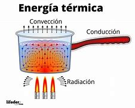

¿Qué es la energía térmica?
La energía térmica se refiere al calor generado a partir de la combustión de combustibles fósiles o biomasa. Se utiliza principalmente en procesos industriales y generación de electricidad.La energía térmica es la forma de energía que proviene del calor y está relacionada con el movimiento de las partículas en un material. Cuanto más rápido se mueven las partículas, mayor es la energía térmica del objeto.
Aquí te presento un desglose detallado sobre la energía térmica:
1. Definición de Energía Térmica
 La energía térmica se refiere a la energía interna de un sistema, que se manifiesta como calor. Se genera debido a la agitación de las moléculas en un cuerpo; a temperaturas más altas, las partículas se mueven más rápidamente, lo que se traduce en mayor energía térmica.La energía térmica es la energía interna de un sistema relacionada con el movimiento y la vibración de sus partículas. Se manifiesta como calor y se mide a través de la temperatura. La transferencia de energía térmica entre cuerpos se produce a través de la conducción, convección y radiación.
2. Principios Fundamentales
Temperatura: Es una medida de la energía cinética promedio de las partículas en un material. A temperaturas más altas, la energía térmica es mayor.
Calor: Es la transferencia de energía térmica de un cuerpo a otro debido a una diferencia de temperatura. El calor siempre fluye desde el cuerpo más caliente al más frío.
3.Ventajas
La energía térmica tiene varias ventajas, entre las que destacan:
1. Abundancia: La energía térmica es generada por fuentes naturales como el sol, el geotermal, y la biomasa, lo que la hace accesible en muchas regiones del mundo.
2. Almacenamiento: Se puede almacenar de manera efectiva en materiales térmicos, lo que permite utilizarla cuando se necesita, como en sistemas de calefacción.
3.Versatilidad: Se puede utilizar en una variedad de aplicaciones, desde la generación de electricidad hasta la calefacción de espacios y el cocinado de alimentos.
4.Tecnología consolidadad: Existen tecnologías bien desarrolladas para aprovechar la energía térmica, como calderas, intercambiadores de calor y sistemas de energía solar térmica.
5. Reducción de emisiones: Cuando se utiliza fuentes renovables (como solar térmica o geotermia), la energía térmica puede contribuir a una menor emisión de gases de efecto invernadero en comparación con combustibles fósiles.
6.Eficiencia: En muchas aplicaciones, la conversión de energía térmica a energía eléctrica puede ser muy eficiente, especialmente en plantas de energía de ciclo combinado.
7.Soporte para otras energías renovables: La energía térmica puede complementar otras fuentes de energía renovables, ayudando a estabilizar la red eléctrica y a proporcionar energía cuando la solar o eólica no están disponibles.
4.Desventajas y Desafíos
La energía térmica también presenta algunas desventajas, que incluyen:
1. Eficiencia variable: La conversión de energía térmica a electricidad puede ser menos eficiente que otros métodos, como la energía hidroeléctrica.
2. Dependencia de recursos: Algunas formas de energía térmica, como la biomasa o los combustibles fósiles, dependen de recursos que pueden ser limitados o no sostenibles.
3. Emisiones contaminantes: En el caso de utilizar combustibles fósiles, la generación de energía térmica puede producir emisiones de gases de efecto invernadero y otros contaminantes.
4. Impacto ambiental: La explotación de recursos geotérmicos o la producción de biomasa puede afectar el medio ambiente local, incluyendo la biodiversidad y la calidad del suelo y agua.
5. Costos iniciales: La instalación de tecnología para aprovechar la energía térmica, especialmente en sistemas solares térmicos o geotérmicos, puede requerir una inversión inicial considerable.
6. Variabilidad en disponibilidad: La energía térmica solar depende de la disponibilidad de sol, lo que puede ser un inconveniente en regiones con climas nublados o invernales.
7. Limitaciones en almacenamiento: Aunque se puede almacenar energía térmica, los sistemas de almacenamiento a gran escala son a menudo costosos y técnicamente desafiante
6.Perspectivas Futuras
La perspectiva futura de la energía térmica es prometedora, especialmente en el contexto de la transición hacia fuentes de energía más sostenibles. Aquí hay algunas tendencias y desarrollos esperados:1. Aumento de la energía solar térmica: La tecnología solar térmica está ganando popularidad, y se espera que su uso se expanda en aplicaciones residenciales e industriales, especialmente en climas soleados.
2. Desarrollo de sistemas geotérmicos: La energía geotérmica tiene un gran potencial no explotado. Se prevé un aumento en la inversión y el desarrollo de tecnologías para acceder a fuentes geotérmicas más profundas y menos convencionales.
3. Integración con otras energías renovables: La energía térmica se combinará cada vez más con otras fuentes renovables, como la solar y la eólica, para proporcionar un suministro más estable y confiable de energía.
4. Avances en almacenamiento térmico: Se están investigando y desarrollando nuevas tecnologías de almacenamiento térmico, como materiales de cambio de fase, que podrían mejorar la capacidad de almacenar energía térmica de manera más eficiente.
5. Mejoras en eficiencia: La innovación tecnológica continuará mejorando la eficiencia de los sistemas de conversión de energía térmica, lo que hará que su uso sea más atractivo económicamente.
6. Desarrollo de políticas: Se espera que los gobiernos implementen políticas más favorables para la adopción de tecnologías térmicas renovables, incluidas subvenciones y normativas que fomenten la reducción de emisiones.
7. Aumento de la conciencia ambiental: A medida que la preocupación por el cambio climático y la sostenibilidad crezca, es probable que la demanda de soluciones energéticas limpias y eficientes, incluida la energía térmica, también aumente.
En resumen, la energía térmica tiene un futuro brillante si se aprovechan adecuadamente sus potencialidades y se abordan sus desventajas. Si deseas más información sobre algún aspecto específico, ¡estaré encantado de ayudarte!